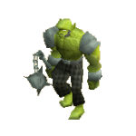

")
History of the Goblins
The Origin of Goblins | Goblins in the God Wars | The Dorgeshuun Rebellion
The Dorgeshuun Civil War | Surface Goblins in the Fourth Age | The Battle of the Plain of Mud
Surface Goblins Today | The Dorgeshuun Today
The Dorgeshuun Civil War | Surface Goblins in the Fourth Age | The Battle of the Plain of Mud
Surface Goblins Today | The Dorgeshuun Today
SPOILER ALERT: This article contains information revealed during the goblin quest series - The Lost Tribe, Death to the Dorgeshuun, Another Slice of H.A.M. and Land of the Goblins - up to the beginning of The Chosen Commander. You may prefer to complete these quests before you read the article.
The Origin of Goblins
The goblin species evolved in a world separate from RuneScape, along with orks, ogres, and similar creatures. These primordial goblins were hunter-gatherers, using stone tools and living in small villages amid swamps. They were not without conflict, but organised warfare had yet to be invented.
This existence came to an end when the god Bandos arrived in that world, and forced its inhabitants to worship him and build monuments to his glory. He taught them agriculture, metal-working - and war.
Goblins in the God Wars

During the Second Age of RuneScape, many gods brought their races to RuneScape from other worlds, and Bandos was no exception. All the goblins, hobgoblins, orks, ogres and ourgs of RuneScape are descended from those that Bandos introduced in the Second Age.
Towards the end of the age, Bandos could sense that a war was brewing, so he organised all his races into a vast army. He divided the goblins into twelve tribes, or regiments, each one headed by a general who reported directly to him. He sold two of those tribes to other gods in exchange for magical power, but kept the rest for himself.
Bandos's races all had distinct roles in his army, and the war god engineered them to fit their roles perfectly. Orks were the heavy infantry, well-trained and well-equipped, forming the backbone of the army. Ogres and ourgs were living siege engines, capable of battering down city walls or taking on entire enemy units. Hobgoblins were hardy but highly mobile, capable of guerilla engagements behind enemy lines. Goblins were the lowest rung, light footsoldiers, the weakest and most poorly equipped of Bandos's creatures. They were used as scouts and skirmishers, and were herded into battle in vast numbers in order to soften the enemy up before the ork infantry entered the fray.

The Dorgeshuun Rebellion
The goblins' devotion to Bandos was not quite universal, though. Towards the end of the God Wars, Bandos ordered the entire Dorgeshuun tribe into battle against a far superior foe. The tribe's leader, General Bloodfist, decided to defy his god rather than let his tribe be destroyed.
Near what is now Lumbridge was a huge fissure in the ground, opened up by the colossal energies of the gods' conflict. Bloodfist ordered the tribe to march into this fissure and hide in the cave system beneath. Bloodfist himself did not survive to join them; Dorgeshuun legend has it that he stood at the entrance of the fissure and shouted defiance at Bandos, who smote him with a divine missile, the force of which closed up the caves and sealed the Dorgeshuun below ground.
Lieutenant Strongaxe, Bloodfist's second in command, took charge of the Dorgeshuun and led them deeper into the caves, setting up camp in a large cavern. They expanded the cavern and carved their houses into its walls, forming the city of Dorgesh-Kaan, and over time they gradually transformed into modern cave goblins.
At first the Dorgeshuun were as militaristic as they had been on the surface, and the city was ruled by a succession of generals who wielded absolute power. One of the generals assembled a council of civilian elders, but these were only advisors. With no external enemies to fight, however, it slowly became clear that a military general was not the ideal leader.
The Dorgeshuun Civil War
The military hierarchy became isolated from the civilian population, and the people increasingly believed that the council should have control. They held a public vote that showed overwhelmingly that the people wanted a republic, but the last general, Bonehelm, refused to give up power. Eventually a mob of citizens marched on the general's palace. General Bonehelm ordered his soldiers to attack the mob, and so began the Dorgeshuun Civil War.
The republican faction was larger, but most of the trained soldiers were loyal to the general, and his faction controlled the few remaining pieces of magical equipment that the tribe had brought from the surface. After a bloody battle in Dorgesh-Kaan, Bonehelm was driven from the city and set up a base in the caves nearby.
General Bonehelm was finally defeated not by the rebel militia, but by his army's poor construction skills. His tunnelling had weakened the stone around his base, and it eventually collapsed, burying the bulk of his army. His few surviving soldiers surrendered, and the council coordinated the repair of the city. Since then, the Dorgeshuun have been ruled by the council and there have been no major conflicts.
Surface Goblins in the Fourth Age

Competition over territory and resources led to a generations-long war between goblins and ogres that culminated in an attempt by the ogres to wipe all goblins out. The goblin tribes lived along with ogres in the Feldip Hills, but the war drove the goblins north, into what is now Kandarin, where they came into conflict with gnomes. The goblins and gnomes fought for control of the land, but the gnomes conjured illusions of giant tortoises that scared the goblins off. The goblins were forced to migrate further north, settling wherever they could.
As the Fourth Age progressed, the humans and gnomes began to build walled cities, making it increasingly difficult for goblins to raid them for supplies. Starved of resources and without a homeland, the goblins descended into inter-tribal warfare.
The Battle of the Plain of Mud
The goblin war culminated in a battle involving all the surviving tribes. It rained heavily for several days, and the goblins' feet churned the ground, turning the plain into a quagmire and giving the battlefield its name, the Plain of Mud. Huge numbers of goblins were killed, and it seemed likely that the species would be destroyed.
The battle ended when a goblin footsoldier named Hopespear announced that the Big High War God, Bandos, had spoken to him in a dream. The Big High War God had ordered the goblins to stop fighting one another, and to await the coming of a Chosen Commander who would someday lead goblins to victory over the whole world. The tribal generals believed Hopespear and agreed on a truce.
The goblins built a temple on the site of the battle and Hopespear's vision became the basis of modern goblin religion.
Surface Goblins Today

The identities of the goblin tribes are not as distinct as they once were. Tribes have inter-bred, and, although the old tribal symbols can be found on goblin flags, few goblins today identify with one tribe in particular. Goblins still organise their society around military lines, with leaders of villages still called generals. The values that Bandos instilled in them are still central to their culture: courage and blind obedience are emphasised, and independent thought is viewed with suspicion. The few goblins who can read often carry with them a copy of the Book of the Big High War God, a compilation of ancient goblin beliefs along with Hopespear's prophecy. The more devout goblins sometimes make pilgrimages to the temple at the Plain of Mud, where the High Priest lives, the spiritual leader of all goblins.
Goblin names are almost always a conjunction of an unappetising word and a body part or weapon. It is a mark of their poor racial self-esteem that the names have morphed from the heroic or warlike ones of the Third and Fourth Ages (Bloodfist, Hopespear) to the lowlier ones of today (Wartface, Bentnoze). Surface goblins are torn between two conflicting views of themselves: the fervent belief that they are the chosen people of the Big High War God and the greatest warriors in RuneScape, and the secret knowledge that they are really the lowliest of RuneScape's races, living off the scraps of greater civilisations and no threat to any experienced warrior. In true goblin tradition, they deal with this contradiction by never thinking about it.
The Dorgeshuun Today

The Dorgeshuun Council consists of seven elected councillors, who take the title 'Ur-' in place of the first syllable of their names as a mark of prestige. The council is often conservative and over-cautious, and can spend a long time deliberating over decisions. This served the city well during the years of isolation, but the council has struggled with the rapid events since the city made contact with the surface.
The Dorgeshuun view the gods as bogeymen or demons, personifications of all that is evil. They make no distinction between different gods; as far as they are concerned, they are all as bad as each other, and they want nothing to do with any of them. Before the city made contact with the surface, goblin children were generally not told about the existence of the gods, or the existence of the surface.

More articles in
Miscellaneous Guides
|
|
|
Further Help
If this article does not help you, you may find the following sections of the RuneScape site helpful:
|
|